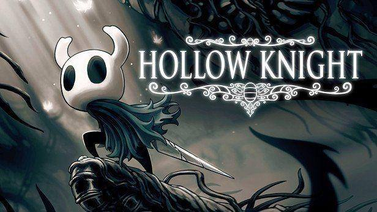
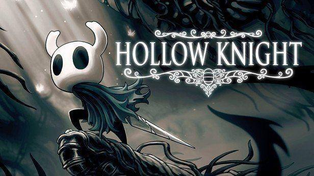
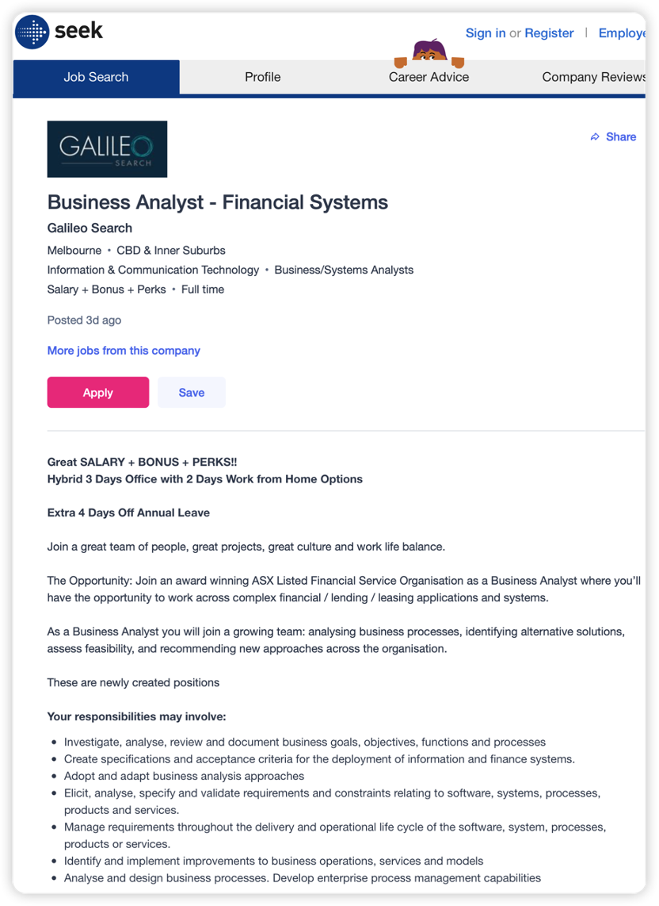
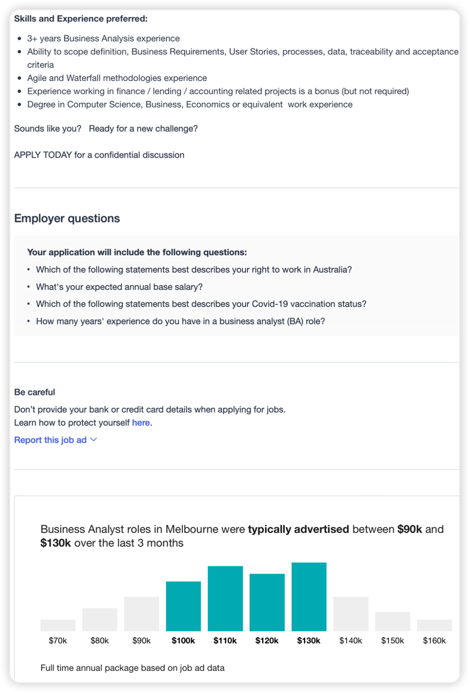
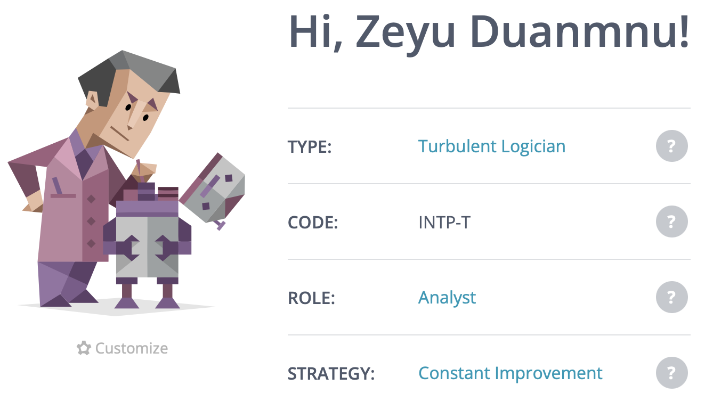
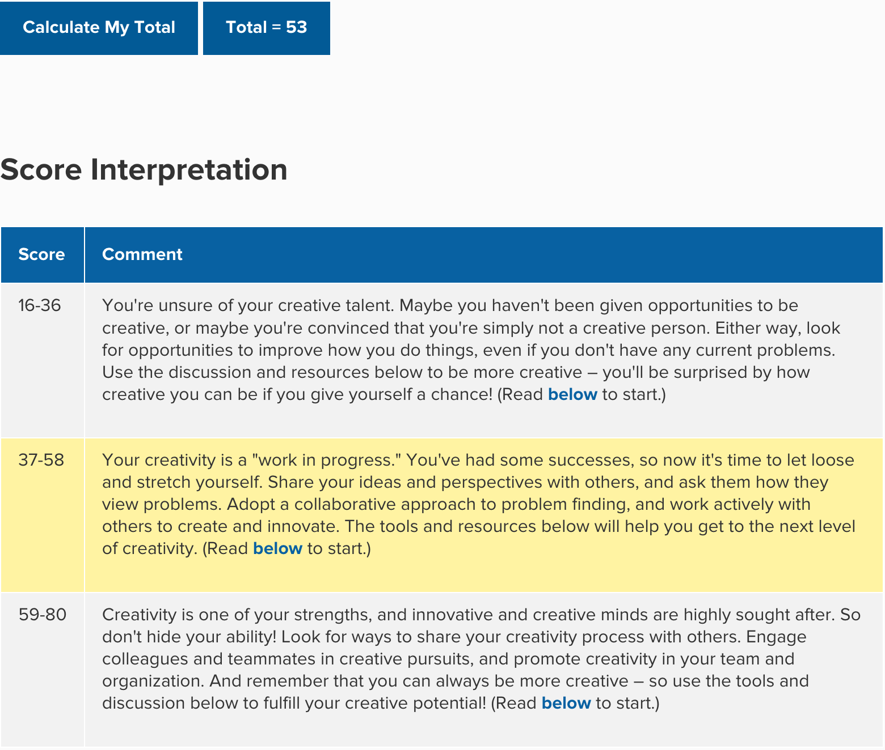

Welcome to my Student Profile
Introduction
Name: Zeyu(Wood) Duanmu
Student ID: s3922517
Student E-mail Address: s3922517@student.rmit.edu.au
Two of my pictures are on the right, they were shot in recent year.

(A warm tip that the buttons below are placed here if you find it uncomfortable reading black text.)
Personal Information
| Introduction | Hello, my name is Zeyu Duanmu, you can also call me Wood if you like. Over this profile I am going to talk about my personalities, ideal job and one of my IT project ideas. |
| University | I am going through the 1st year online study at RMIT. RMIT is recognized as a leader in the field of higher technology education. It has a top QS ranking and has been rated as a five-star university in recent years. Studying at RMIT is a wise choice obviously because I can equip myself with necessary skills my employers want. After the recommendation of my international learning teacher, I got the Certification of Enrollment from RMIT successfully which excites me so much. I am ready to have fun! |
| Culture and education | I am a Chinese. I can speak Chinese and English, but I found that Chinese and English are far more than enough after I finished my foundation study for university in Melbourne. Melbourne is an amazing city that there are languages and restaurants came from so many countries all over the world! By the way, I do not have a religion. I am interested in mathematics and physics. I like making dumplings warped by reed leaves on my own when the Dragon Boat Festival comes. |
| Hobbies | I love collecting all kinds of gamepads in JB Hi-Fi. My favorite video game is Hollow Knight which I spent 500h on. I think this game is a masterpiece worthy of admiration. It achieves the ultimate degree of completion under the condition of only three members in the development Team which is unbelievable. I'm really looking forward to Team Cherry's new work Hollow Knight: Silksong. I hope I can code like the developer in Team Cherry one day. |
 
Interest in IT
| My Interest | To be honest, I cannot say any specific area of IT interests me like AI or Cloud Computing at this moment. What truly interests me is that IT looks like an all-encompassing castle. I just cannot wait to figure out why the changes in IT are so rapid and unpredictable. Keeping up with these changes requires me to enrich myself by learning new stuffs. What is more, I like challenges which makes my life more rewarding. |
| Start of Interest | When I just entered my primary school, I got my first laptop as my 10th birthday present from my uncle. Ten years ago, I do not really know something about coding, but I do use this gift from my uncle to download the movie series about 007. One of the spies in the movie is a computer hacker He looks very cool when he completes the hacking mission just by clicking the keyboard in a secret remote place. The progress bar in his screen is related to something vital in the spy team mission. That sparks my Interest in IT in my youth. |
| Why RMIT | RMIT is located at the CBD of the great city Melbourne which has the advantages of nature environment. I can have a perfect chance to concentrate on the study of IT knowledge and meet some elites in the field of IT during my study period at RMIT. Another reason I chose RMIT is that teachers at RMIT are friendly and erudite. |
| Expected Studies | Information technology is recognized as an invention changing the space, time and thought of human beings. It is impossible to become an all-rounder in the ocean of IT. But I hope I can practice my basic academic skills about scientific research and became knowledgeable in one particular aspect of IT with the help from my tutors. |
Ideal Job
Here is the link of the advertisement on www.seek.com.au:
https://www.seek.com.au/job/56325557?type=promoted#sol=08e52f01053bd3bb653a3689003b844eef37f757
This is the snapshot of the advertisement about my Ideal Job:
| Appeal | This is a full-time job as many system analysts do. It is about analyzing whether current system satisfies the needs of business or not and write requirements for improvements.(‘Business Analyst - Financial Systems Job in Melbourne’ n.d.) People who get this job do not have to work in the office room all week they can work at home for two days if they want. This work requires a lot of communication with others, and I like talking to others. The great salary from this job is the most appealing one. Achieving a balance between work and life is also one part of my ideal job. I believe that I can be a great employee if I work in a team of great people. When I am doing my ideal job, I hope I can enjoy the sense of achievement by making a team more prosper using my IT solutions. |
| Needs | The first I need will be a degree in IT or computer science. Moreover, the employers also put high weight on the system analyst working experience. A working experience more than three years is needed. Finally, the ability to analyze current conditions and implement improvements is vital factor to become a system analyst. |
| Skills | I know how computers work and what kind of system configuration will be needed when it is dealing with a particular need. I can speak both English and Chinese, I can do more excellent job than others if the client only speak Chinese. I have a young and healthy body which can ensure that I can keep energetic during the work hours. |
| Obtain | To equip myself with all the requirements from the employers to get my ideal job as a computer system analyst earlier. I think I need to get a high GPA at RMIT and participate in the practice more activities which can benefit the local community. At the same time, I must talk to others more to get the communication skills ready to be an eligible system analyst. I should also learn some knowledge about business at college because system analysts are also expected to having understandings about the chosen field. |
Personal Profile
Here are my results of an online Myers-Briggs test on www.16personalities.com:
Here are my results of an online learning style test on http://www.educationplanner.org/students/self-assessments/learning-styles.shtml:

Employers always place a high priority on creativity, so my third online test is a creativity test on https://www.mindtools.com/pages/article/creativity-quiz.htm, Here are my results:
One paragraph in addition to the results themselves:
| The results of these tests mean a lot for me. I got some valuable advice from the Internet, and I have a simple insight into my abilities and drawbacks. All these results have good reference value when I am planning my career. The 16 personalities test result reveals that "Turbulent Logician" is likely to be considered cruel by others because they tend to get distracted by their own thought at large social events.(‘Your Profile | 16Personalities’ n.d.) I learnt from that, and I try not to use too much logic thinking when I hang out with others then I do make some new friends in group! It also said that my role in a team is the analyst, that makes me believe that I am going to be a system analyst in the further and my behavior in my team becomes more confident. These three tests seem to be a chain effect among them. My total score in the creativity test is 53 and the result suggest me to collaborate with others actively to communicate innovation ideas and listen to the views about problems from each other. (‘How Creative Are You?’: n.d.) I found it is right when I am exchanging something original with my roommate. The way of making the influence of results more valuable is that make people with the similar self-develop strategy from a group. Another approach is that we can let people with complementary personalities and creative talent work together. The learning style test result is proved to help me a lot according to the monitoring of my learning efficiency after I follow advice as a tactile main learner. That help me looks more reliable in a team and I can do more contributions to the team. When I am forming study groups as a tactile learner, it is hard for me to remember things by my ears or eyes. I shall involve myself in the activities about touching and movement or I will become bored which will let the team down.(‘What’s Your Learning Style?’ n.d.) |
Project Idea
| Overview | Programmable Logic Controller (PLC) has been one of the pillars of modern industry after the industrial automation. (Rohner 1991) In my innovation application idea, programable logic controller is adopted in my project idea like the choice of most industrial enterprises. It can carry out network remote communication. programable logic controller is transformed into a medical equipment in the clinical treatment of athletes with accident concussion. A device that can obtain images will be assembled on programable logic controller to continuously track the eyeballs of concussion patients. On the other side, programable logic controller's data transfer and analysis abilities enable doctors to monitor the recovery of concussion patients in a few weeks more accurately with this new upgrade of hardware. |
| Motivation | Programable logic controller cost performance gets higher in the market of the near future. It will be completely feasible for a student in college to make a prototype for the new medical machine. The latest program language can be applied on programable logic controller easily including the eye-tracking program. As a result, it is conducive to the further upgrading of products if programable logic controller can be assembled to the new medical machine. The connection between concussion and eyeballs movement on the athletes has been proved by the research. Up to 80 percent of athletes with concussions develop eye movement disorders. (Snegireva 2019) |
| Description | The medical machine of this project has the characteristics of strong practicability, simple operation, small size, low energy consumption, strong anti-interference ability, strong reliability and complete hardware functions. (Petruzella 2017) Convenient and compatible with new innovative technologies. The central processing unit (CPU) is the most important part of this project machine and can perform operations such as storage, error reporting, and detailed analysis. It may also address the requisites for the clinical management of athletes with accidental concussions. The project machine will use the NVIDIA CPU to manage medication sequence control, logic operation storage, timing and other tasks for good patient care. NVIDIA CPUs are ideal for artificial intelligence, bare metal cloud, cloud supercomputing, storage, gaming and 5G wireless. (Burstein 2021) This project machine is relatively simple and easy to learn in programming, mainly using ladder graphics language technology. In this project machine, two basic ways of storing data will be used. Programs data that define the functions of this medical machine are stored in read-only memory (ROM), in which the data cannot be changed after the memory chip is manufactured. (Kandare, Strmčnik & Godena 2010) The programming language used to write the eye-tracking code is expected to be Python. Zhiguo Wang, author of Eye Tracking Using Python and Pylink, says Python is increasingly popular with scientists. When I started graduate school about 17 years ago, I knew almost nothing about computer programming. I tried different programming languages and tools, but ultimately settled on Python's simple, flexible, and general syntax. (Wang 2021) Programmable logic controllers are compatible with many new programming languages, so Python is one of the best choices for coding eye-tracking camera systems. In addition, new medical machines require the installation of programming software. Programmable logic controllers can store programming languages in them, but we don't need to write source code programs ourselves, we use specialized tool software to generate the necessary source code. Control software development based on the domain-specific modeling language ProcGraph and special design tools for automatic generation of program code and documentation. (Kandare, Strmčnik & Godena 2010) Thus, medical staff who have never written code before are not overwhelmed by complex programming operations and can quickly create the procedures they need. The software also shortens the distance between project developers and doctors. In addition, when selecting the overall design and equipment of the programmable controller, more advanced and higher-quality tools can be selected, which greatly improves the anti-interference and stability of the programmable controller. Finally, in the maintenance of this project machine, targeted maintenance and repair can be carried out according to the corresponding monitoring instructions, making maintenance and use easier. |
| Skills Required | The images captured by the project machine’s camera are uploaded to the cloud database, and the research material information about the concussion and eye movement will be generated by the big data analysis. While enjoying the convenience brought by big data, the medical privacy is under greater threat ever than before.(Chapter 21 Medical privacy and big data: A further reason in favour of public universal healthcare coverage 2019) Writing security program to set various constraints on the camera to protect parents' privacy is necessary. No one is authorized to exploit this personal information for nefarious purposes. A privacy camera, such as a collection of light field camera or RGBZ camera is selected for the project machine. The image presented contains clearly visible area items, as well as any blurred objects in the combined image backdrop that are displayed with limited depth of field and/or whose background is filled with another image. (MEHRAN RAMIN & CUTLER ROSS G 2018) To preserve the privacy of athletes who have had a concussion. The project machine will use Internet to transfer data which is convenient. On the other side, devices associated with Internet access are at higher risk, and stronger security measures should be taken to prevent or minimize damage or data loss. (Hajda, Jakuszewski & Ogonowski 2021) Random-access memory (RAM), sometimes called read-write memory (R/W), is designed to write information from memory. Data stored in RAM will be lost in the event of a power failure. To avoid data loss when the device is turned off, a backup battery which can last two to five years will be assembled to this product machine. |
| Outcome | To sum up everything that has been stated in my project idea so far, the statement about the project's outcome is that converting a programable logic controller into medical equipment for the clinical treatment of athletes with concussion will be a step forward in the development of traditional industrial hardware. This project will allow me to gain valuable practical experience as a system analyst, which will help me move closer to my ideal employment. If this new medical machine performs well, my passion for using technology to serve the community will not be squandered. |
REFERENCES
Burstein, I 2021, ‘Nvidia Data Center Processing Unit (DPU) Architecture’, in IEEE, Piscataway, pp. 1–20.
‘Business Analyst - Financial Systems Job in Melbourne’ SEEK, viewed 26 March 2022,
Chapter 21 Medical privacy and big data: A further reason in favour of public universal healthcare coverage 2019, Oxford University Press.
Hajda, J, Jakuszewski, R & Ogonowski, S 2021, ‘Security Challenges in Industry 4.0 PLC Systems’, Applied sciences, vol. 11, no. 21, pp. 9785-.
‘How Creative Are You?’:, viewed 26 March 2022,
Kandare, G, Strmčnik, S & Godena, G 2010, ‘Domain specific model-based development of software for programmable logic controllers’, Computers in Industry, vol. 61, no. 5, pp. 419–431.
MEHRAN RAMIN & CUTLER ROSS G 2018, ‘Camera with privacy modes’,.
Petruzella, FD 2017, Programmable logic controllers, Fifth edition., MCGRAW-HILL US HIGHER ED, S.l.
Rohner, P 1991, PLC programmable logic controllers for industrial automation. Teacher book 1, Rohner Fluid Power Automation & Control, Briar Hill, Vic.
Snegireva, N ‘Eye-tracking can help diagnose concussion, but it’s under-utilised’, The Conversation, viewed 22 March 2022,
Wang, Z 2021, Eye-Tracking with Python and Pylink, 1st ed. 2021., Springer International Publishing, Cham.
‘What’s Your Learning Style?’, viewed 26 March 2022,
‘Your Profile | 16Personalities’, viewed 26 March 2022,